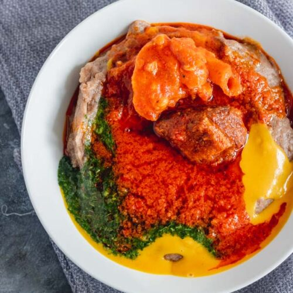

Gbegiri Recipe

Gbegiri soup is a delicious Nigerian soup made mainly from peeled beans (brown beans or black-eyed beans). It’s popular among the Yoruba people of Nigeria, and it’s often eaten with amala (yam flour swallow) and sometimes served with ewedu and stew.
Ingredients (for about 4–5 servings)
- 2 cups peeled beans (brown beans or black-eyed beans)
- 2–3 tablespoons palm oil
- 2–3 medium tomatoes (optional, some recipes skip this)
- 1 medium onion
- 1–2 scotch bonnet peppers (ata rodo) or any chili pepper
- 1 bell pepper (tatashe) (optional, for colour)
- 1–2 seasoning cubes
- Salt (to taste)
- 1 teaspoon ground crayfish (optional, but adds flavour)
Preparation Steps
Step 1: Prepare the beans
- Use beans that are already peeled. If not, soak beans for a few minutes and peel off the skin (rub between your palms in water, rinse, and discard the skins).
- Boil peeled beans in a pot with water until very soft (about 40–60 minutes).
Step 2: Blend
- Once beans are soft, blend them smoothly with some of the cooking water (or use a wooden spoon to mash if you prefer).
- Blend together the onion, pepper(s), and tomatoes (if using)
Step 3: Cook the Soup
- Return the blended beans to the pot.
- Add palm oil, blended pepper mix, ground crayfish (if using), and seasoning cubes.
- Stir well and allow to cook on medium heat for about 10–15 minutes, until the soup thickens slightly.
- Add salt to taste.
Step 4: Serve
- Gbegiri is often served with ewedu soup and stew alongside amala (yam flour swallow).
- It can also be eaten with rice or other swallows like semo, fufu, or pounded yam.
Home Page